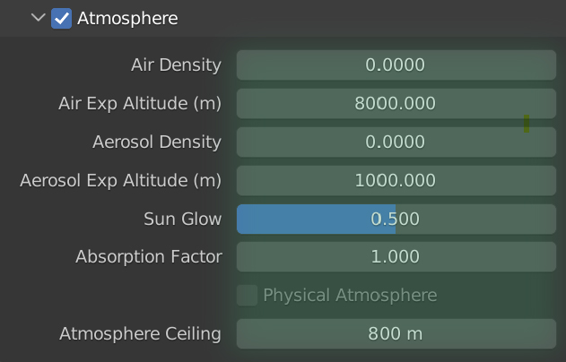

The atmosphere can be enabled in the atmosphere sub-panel. This will add an atmosphere voume around the scene and change the scene's world background.

Atmosphere Settings
Air Density
The sealevel density of air scattering. Higher values produce a thicker looking atmosphere.
Air Exp Altitude
Controls the exponential falloff of air density with altitude. At this altitude, the air density will be 36.7% of the sealevel density.
Aerosol Density
The sealevel density of aerosol scattering. Aerosols are particles in the air such as water or smog.
Aerosol Exp Altitude
Controls the exponential falloff of aerosol density with altitude.
Sun Glow
Controls the proportion of light that is scattered forwards by aerosols into the camera, producing a glow effect around the sun.
Absorption Factor
The amount of light that is absorbed by aerosols, making the distance appear darker. For a poulluted air look, this value can be made higher. Humid air on the other hand does not absorb as much light, but could have a higher density.
Atmosphere Ceiling
PlanetSet generates an 'atmospheric shell' around the scene when the atmosphere is enabled. This shell extends upwards into the sky until it reaches the ceiling altitude. When using the Nishita sky, the default ceiling value is 800m, which is usually enough to for a scattering/haze effect over the terrain. This value can be changed in the atmosphere panel.
You may want to make this value much larger to recreate scattering for taller mountains or for high-altitude clouds. However, as the ceiling gets higher, the atmosphere starts becoming more like a true sky. Eventually, it becomes unphysical to illuminate the sky volume with the Nishita sky background. This would be equivalent to outer space looking like the sky, whereas in outer space there is just the direct light coming from the sun and everything else is black. Therefore, the physical atmopshere option simply sets the background the black and introduces a blackbody sun lamp; the colours of the sky are recreated naturally through scattering.
Nishita Sky
The Nishita sky model is the default sky model built into Blender which users may be familiar with. PlanetSet adds a small scale medium around the planet to add the effect of scattering and haze to the terrain and distant clouds. The light contribution comes from the background which can be thought of as an inifinitely far light source. This is not 100% correct, but produces good results in many cases.
Physical Atmosphere
Warning
As of Blender 3.2, the physical atmosphere is currently unusable due to issues with Cycles. For this reason it is disabled, but I am working to try and get the issue resolved so it can be used again.
When enabled, the background brightness is set to zero (black like outer space) and a sun disk and full-scale atmosphere is placed around the scene. The atmosphere shader mimics Rayleigh, Mie and Ozone scattering. With this setup, most of the lighting comes from actual volumetric scattering in the atmosphere, so it is very important to make sure the volume bounces are sufficient. It requires more samples to render the physical atmosphere, particularly when the sun has a low elevation.
The results will look subtly different with this sky. As the artist, it is up to you to choose which you prefer, however, the physical sky is designed to be used when:
- You are rendering very high altitude shots (e.g. close to the edge of space) where the atmosphere's ceiling must be very high.
- You are rendering large, high-altitude clouds (like a storm cloud) that would benefit from lighting affected by the atmosphere at high altitude.
- You are rendering dusk/dawn shots - physical atmosphere recreates the Earth's shadow and The Belt of Venus.